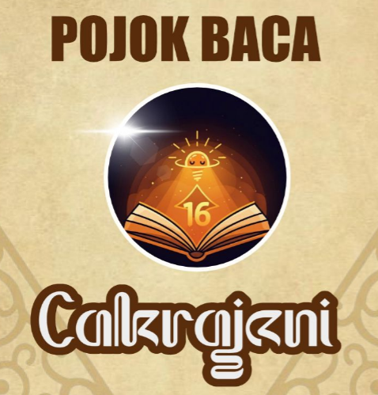

Profil Pojok Baca CAKRAJANI

Tentang Kami
Pojok Baca CAKRAJANI adalah program inovatif dari Dharma Wanita Persatuan SMAN 16 Surabaya yang berfokus pada pengembangan budaya membaca di lingkungan sekolah.
Susunan Organisasi
Ketua
Ibu [Nama Ketua]
Wakil Ketua
Ibu [Nama Wakil Ketua]
Sekretaris
Ibu [Nama Sekretaris]
Bendahara
Ibu [Nama Bendahara]
Koordinator Program
Ibu [Nama Koordinator]
Anggota
Seluruh anggota Dharma Wanita Persatuan SMAN 16 Surabaya
Visi & Misi
Visi: Membangun budaya membaca yang menyenangkan dan berkelanjutan untuk menciptakan generasi cerdas, tangguh, dan berkarakter.
Misi:
- Menyediakan ruang membaca yang nyaman dan inspiratif
- Membangun kebiasaan membaca yang berkelanjutan
- Memperluas wawasan melalui bahan bacaan berkualitas
- Mempererat silaturahmi melalui kegiatan literasi bersama
Program Unggulan
Baca Bersama
Sesi membaca bersama untuk membangun kebiasaan membaca
Diskusi Buku
Forum diskusi tentang buku-buku inspiratif yang dibaca
Workshop Literasi
Pelatihan untuk meningkatkan keterampilan membaca
Review Buku
Kegiatan menulis review dan berbagi inspirasi dari buku